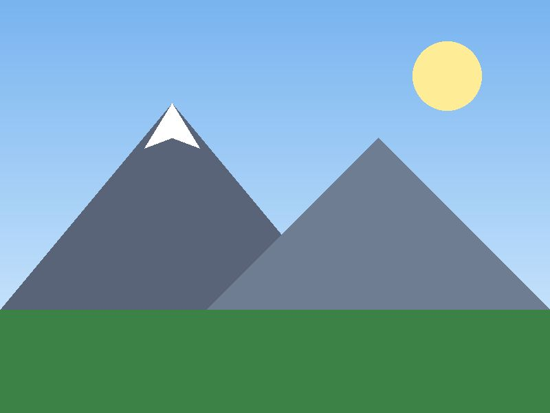
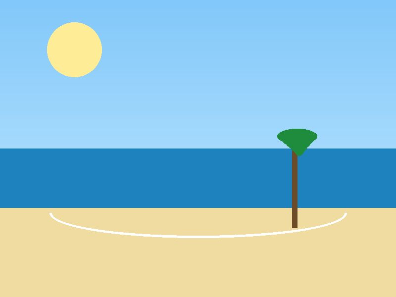
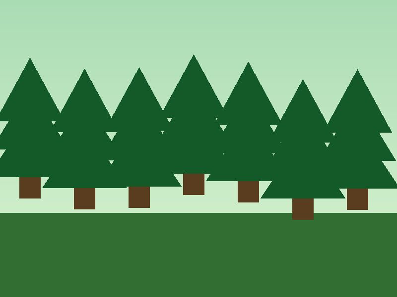
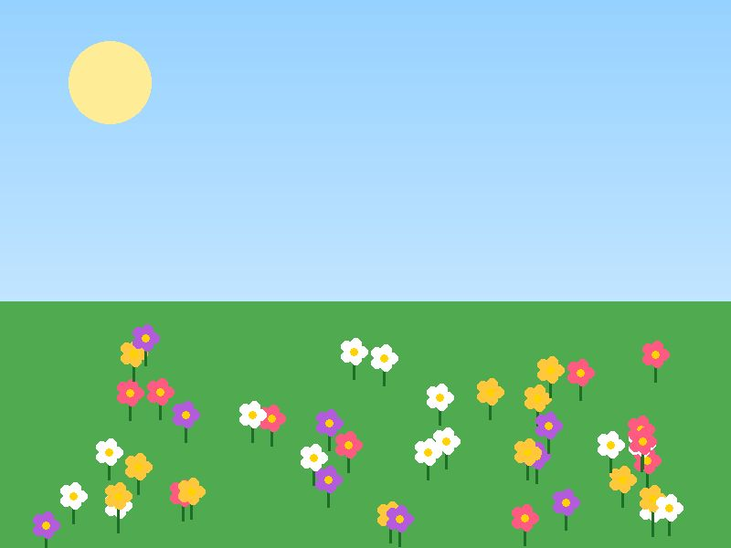

This gallery is a small collection of landscapes that I enjoy. Each picture shows a different place, from calm beaches and tall mountains to busy cities at night.
I chose these scenes because they remind me how beautiful and varied the world is. I hope they inspire you to explore and discover your own favorite places.



